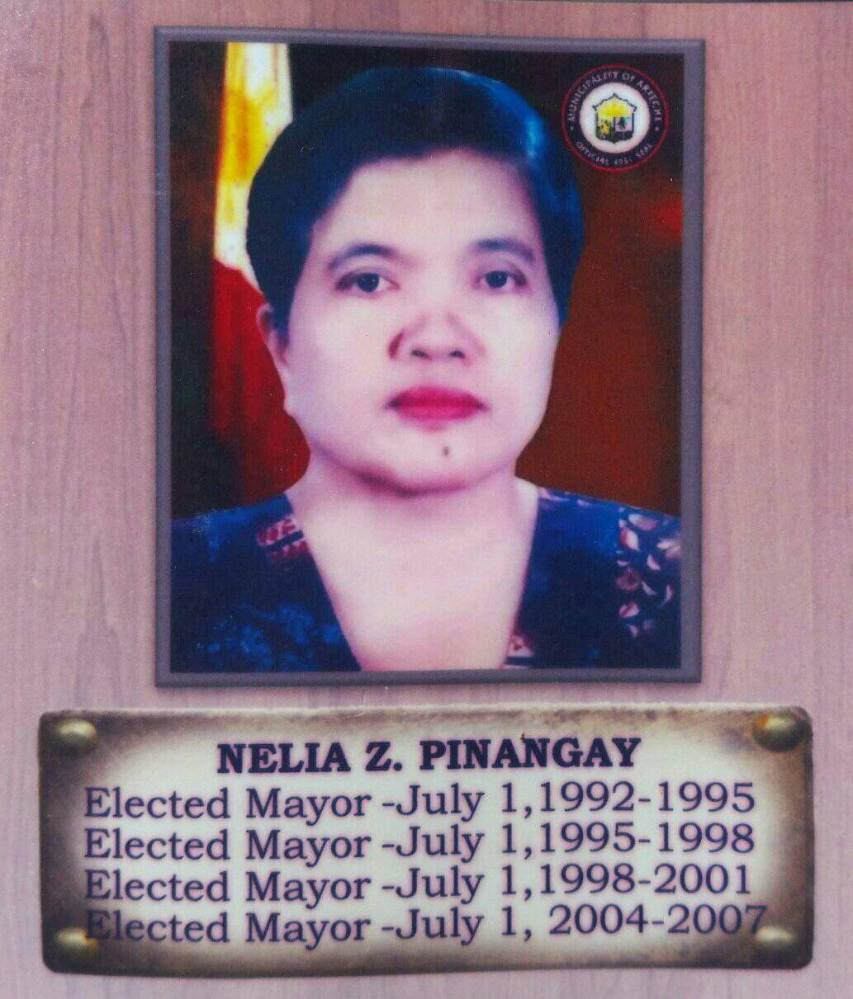

On May 11, 1992, National and local elections, the first woman leader of this municipality was elected in the person of Mayor Nelia Z. Pinangay. She served for three (3) full terms, a total of nine (9) years. Mayor Nelia brought numerous developments to the municipality. She spearheaded the construction of the new Arteche Municipal Hall. It was in her time when Artechehanons from Poblacion barangays namely; Garden, Central, Balud and Rawis was able to have access to 24 hours electricity from ESAMELCO (Eastern Samar Electric Cooperative). Mayor Nelia also started and finished the construction of poblacion roads and the creation of the Arteche public Market. It was Aldo during her time that the town plaza was constructed made from concrete materials. Moreover, it was also during the term of Mayor Nelia when the first 2 storey buildings of ANHS were constructed. After May 10, 20014 National and local elections, Hon. Nelia Z. Pinangay was re-elected to serve for another term until noontime of June 30, 2007.
